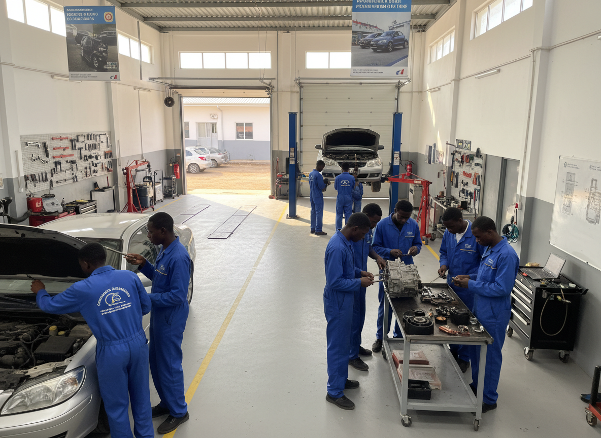
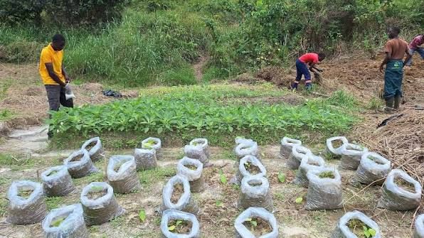
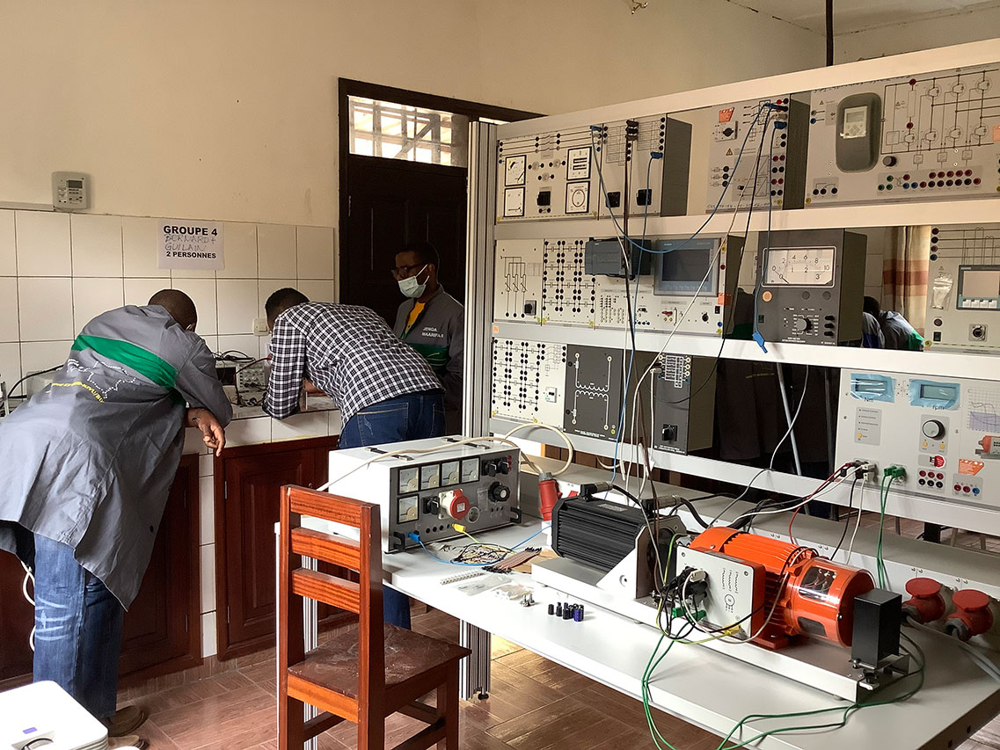

La filière Développement Multimédia Web (DMW) forme des professionnels capables de concevoir, développer et gérer des solutions numériques innovantes. Les étudiants acquièrent des compétences solides en programmation web, en conception graphique (UI/UX), en intégration web, en développement d'applications ainsi qu'en gestion de projets numériques.
En savoir plus
La filière Maintenance Informatique (MINF) forme des techniciens qualifiés capables d'assurer l'installation, la configuration, le diagnostic, la maintenance et le dépannage des ordinateurs, des serveurs, des réseaux informatiques ainsi que des différents équipements numériques.
En savoir plus
La filière Internet et Informatique Industrielle (III) forme des techniciens spécialisés dans la conception, l'installation, la configuration et la maintenance des réseaux informatiques, des systèmes connectés et des équipements industriels automatisés.
En savoir plus
La filière Maintenance des Véhicules Automobiles (MVA) forme des techniciens spécialisés dans le diagnostic, l'entretien, la réparation et la maintenance des véhicules légers et utilitaires. Les élèves acquièrent des compétences en mécanique automobile, en électronique embarquée, en systèmes de diagnostic et en technologies modernes appliquées aux véhicules.
En savoir plusLa filière Organisation et Réalisation du Gros Œuvre (ORGO) forme des techniciens spécialisés dans les métiers de la construction et du bâtiment. Les élèves acquièrent des compétences en lecture de plans, en organisation des chantiers, en réalisation des ouvrages de gros œuvre, en techniques de construction ainsi qu'en gestion des matériaux et des équipes.
En savoir plusLa filière Production Animale (PA) forme des techniciens spécialisés dans les métiers de l'élevage et de la production animale. Les élèves acquièrent des compétences en nutrition animale, en reproduction, en santé animale, en gestion des exploitations d'élevage et en techniques modernes de production.
En savoir plus
La filière Production Végétale (PV) prépare des professionnels capables de produire et de gérer des cultures vivrières et maraîchères. Les étudiants développent des compétences en protection des cultures, en irrigation, en fertilisation et en gestion des exploitations agricoles.
En savoir plus
La filière Maintenance des Équipements Hospitaliers (MEH) forme des techniciens qualifiés capables d'assurer l'installation, la maintenance préventive et corrective, ainsi que le contrôle du bon fonctionnement des équipements biomédicaux utilisés dans les établissements de santé.
En savoir plus